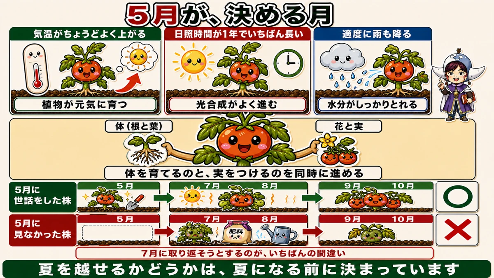
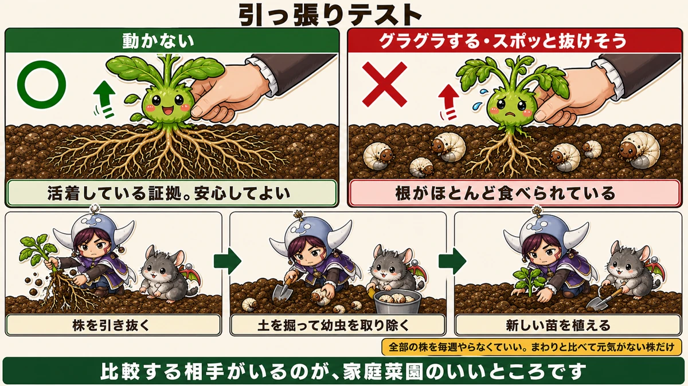
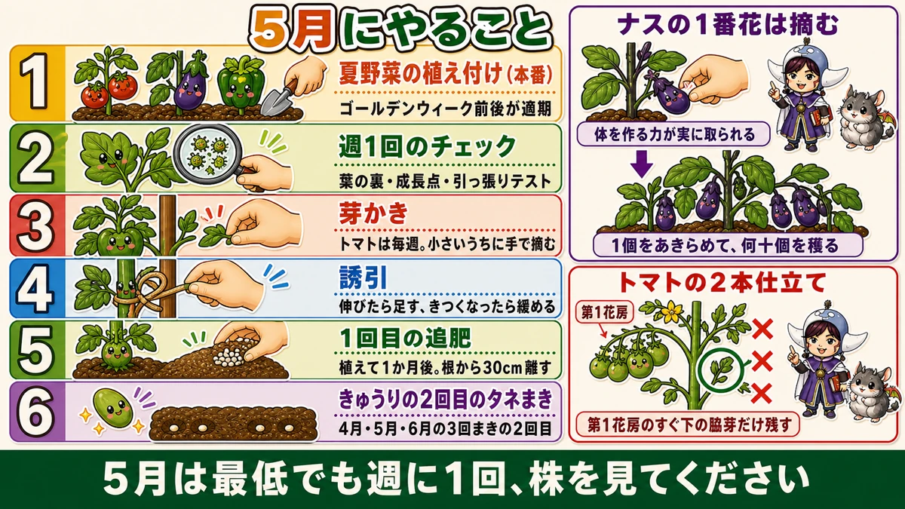

【5月にまく・植える野菜】秋までの収穫は、この1か月で決まります🍅

🗨️「植えたから、あとは待つだけ」
🗨️「7月になると急に元気がなくなる」
🗨️「1株だけ、なんだか育ちが遅い」
どうも、8150（えいこう）です🌱 家庭菜園歴8年、理科の教員免許を持っていて、有機・無農薬で野菜を育てています。
毎月の「今月まく・植える野菜」、5月号です。
そして今月は、1年でいちばん大事な月です。
先に、この記事でいちばん言いたいことを言っておきます。
★9月10月まで穫れるかどうかは、5月の1か月で決まります。
夏の暑さで野菜が止まるのは、7月に何かを間違えたからではありません。★5月にやらなかったことが、7月に出てくるんです☺️

なぜ5月なのか
1年でいちばん条件がいい
5月は、野菜にとって最高の環境がそろいます。
- ★気温がちょうどよく上がる
- ★日照時間が、1年でいちばん長い
- ★適度に雨も降る
暑すぎず、寒すぎず、明るくて、水もある。★これ以上の条件はありません。
★体と実を、同時に作る月
そしてこの時期、野菜は難しいことをしています。
★体を大きくすることと、花を咲かせて実をつけることを、同時に進めなければなりません。
苗の時期は、体を作るだけでした。夏になれば、実をつけるほうが主になります。★5月はその両方が重なる、いちばん忙しい時期です。
だからここで手を入れるかどうかで、株の出来上がりが変わります。
★7月に取り返そうとするのが、いちばんの間違い
多くの方が、こうなります。
- 5月は植えて満足して、あまり見ない
- 7月8月、生育が落ちてくる
- あわてて肥料をやる、水をやる、いろいろ試す
★順番が逆です。
7月8月は、猛暑と乾燥で株が耐えている時期です。★そこで何かを足しても、株には受け止める余力がありません。
逆に、★5月にしっかり体を作っておいた株は、暑い夏を耐えて、涼しくなった9月10月にまた実をつけはじめます。
★夏を越せるかどうかは、夏になる前に決まっています。
だから、週1回
やることは難しくありません。
★5月のあいだ、最低でも週に1回は畑に出て、株を見てください。
見るべき場所は決まっています。次から順にお話しします。
①葉の裏と、成長点を見る
上から見ても、分かりません
株のチェックは、上から眺めるだけでは足りません。
★必ず葉をめくって、裏を見てください。
上から見て何ともないように見える株でも、★葉の裏にアブラムシのコロニーができはじめていることがあります。
★成長点は、いちばん狙われる
もうひとつ、必ず見る場所があります。
★成長点、つまり新芽の部分です。
ここは★株の中でいちばん栄養が活発に動いている場所です。やわらかくて、養分が濃い。虫にとっては、いちばんのごちそうです。
だからアブラムシは、まず成長点に集まります。
数で、やり方を変える
見つけたときの対応です。
- ★少ないとき … ピンセットでつまむ。これがいちばん確実です
- ★多いとき … 刷毛で払って、水で流して、油石けん水を10分
前にそら豆でお話しした3段階が、そのまま使えます。★1回で終わりにしないことも同じです。
葉が丸まっていたら、裏を見る
もうひとつサインがあります。
★葉がくるくると丸まっている。★かじられた跡がある。
このどちらかを見つけたら、★必ずその葉の裏と、まわりの株も確認してください。何かがいます。
②★引っ張りテスト
1株だけ育ちが遅いとき
同じ日に、同じように植えたのに、1株だけ育ちが遅い。
そういうときに、その場でできる確認方法があります。
★株元を持って、軽く揺らす。そして少しだけ上に引っ張ってみてください。

★動かなければ、合格
結果の読み方は単純です。
★動かない … 根がしっかり張っています。活着している証拠です。安心してください
★グラグラする、スポッと抜けそう … ★根がほとんど食べられています
犯人は、土の中にいます
グラグラする株は、地面の下で根を食べられています。
- ★コガネムシの幼虫
- ★ウリハムシの幼虫（ウリ科の場合）
前にお話しした「日中しおれて夜元気」も、同じ原因のサインです。★引っ張りテストは、それをもっと早い段階で見つける方法だと思ってください。
見つけたら、植え直す
正直なところ、★根を食べられた株は回復しません。
やることは決まっています。
- ★株を引き抜く
- ★その場所の土を掘って、中の幼虫を取り除く
- ★新しい苗を植える
5月ならまだ間に合います。★ここで見つけられるかどうかが、その株の1年を決めます。
全部の株を、毎週やらなくていい
毎週すべての株を引っ張る必要はありません。
★「まわりと比べて元気がない株」だけで十分です。比較する相手がいるのが、家庭菜園のいいところです。
③芽かきと誘引

トマトの脇芽は、毎週かく
トマトは、葉の付け根から次々と脇芽が出ます。
★放っておくと、どれが主枝か分からなくなります。そうなると風通しが悪くなり、栄養も分散します。
★週1回見ると決めておくと、脇芽が小さいうちに手で摘めます。大きくしてから切ると、傷口も大きくなります。
★2本仕立てにするなら
もし2本仕立てにしたい場合は、残す脇芽が決まっています。
★第1花房のすぐ下につく脇芽です。
ここだけ残して大きく育て、2本目の主枝にします。★それ以外の脇芽は全部かきます。
なぜここかというと、いちばん勢いのある脇芽が出る場所だからです。上のほうの脇芽を残しても、なかなか太くなりません。
誘引は、足すのと緩めるの両方
前回お話ししたとおりです。
- ★背が伸びたら、上に結び目を足す
- ★きつくなっていたら、緩める
★5月は成長が速いので、先月ちょうどよかった結び目が、今月は食い込んでいます。見るたびに確認してください。
④★ナスの1番花は摘む
最初の実は、あきらめます
これは知らないと、なかなかできません。
★ナスの最初についた実は、3cmくらいのうちに摘んでください。
せっかく実ったのに、と思いますよね。私も最初は抵抗がありました。
理由は「体がまだできていない」から
5月の時点で、ナスの株はまだ小さいです。
そこに実を太らせると、★体を作るための力が、全部その実に持っていかれます。
結果どうなるか。★株が大きくならないまま、その1個だけを育てて終わりです。
最初の実をあきらめると、★株はそのぶん体づくりに集中できます。そして2番目の花からが本番になります。
★1個をあきらめて、何十個を穫る。そういう作業です。
⑤追肥のタイミング
植えて1か月後です
前回くわしくお話ししました。
★1回目の追肥は、植え付けから1か月後。
- 4月下旬に植えた株 … ★5月下旬が1回目
- 5月の連休に植えた株 … ★6月上旬が1回目
★位置は根から30cm離す。★量は1か所30cc、トマトだけ20cc。
★トマトは葉の色を見てください。黄緑がかっていたら追肥どきです。
5月に植える・まくもの
夏野菜の植え付け、本番
前回、「4月に植えるな」という話をしました。★その答え合わせの月です。
- トマト、ナス、ピーマン、きゅうり、ズッキーニ
- かぼちゃ、スイカ、メロン
- ゴーヤ、オクラ、さつまいも
★ゴールデンウィーク前後が適期です。4月に我慢した方は、正解でした。
きゅうりは2回目のタネまき
前回、きゅうりは3回に分けてまくとお伝えしました。
- 4月 … 1回目
- ★5月 … 2回目
- 6月 … 3回目
★1回目の株が育っているうちに、次をまいておく。これで秋まで穫れます。
遅れても、まだ大丈夫
5月に植え遅れた方へ。
★5月中なら、まだ十分に間に合います。というより、5月下旬に植えるくらいがちょうどいい年もあります。
★焦って早く植えるより、しっかり根を張らせるほうが結果はいい。これは4月号でお話ししたとおりです。
週1回、5分でいい
この記事の要点
- ★9月10月まで穫れるかどうかは、5月の1か月で決まる
- 5月は★気温・日照・雨の条件が1年でいちばんいい
- この時期、野菜は★体を育てるのと実をつけるのを同時に進めている
- ★7月8月に取り返そうとするのが、いちばんの間違い。順番が逆
- ★夏を越せるかどうかは、夏になる前に決まっている
- ★5月は最低でも週1回、株を見る
- ★必ず葉の裏をめくる。上から見ても分からない
- ★成長点は栄養がいちばん動く場所なので、虫が集まる
- 少なければ★ピンセット、多ければ★刷毛→水→油石けん10分
- ★葉が丸まっている／かじられた跡があれば、裏と周辺を見る
- ★★引っ張りテスト：軽く揺らして★動かなければ活着、★グラグラなら根が食べられている
- 犯人は★コガネムシやウリハムシの幼虫。★引き抜いて土の虫を取り、植え直す
- ★元気がない株だけ調べればよい。比較できるのが家庭菜園の強み
- ★トマトの脇芽は週1回、小さいうちに手で摘む
- ★2本仕立てにするなら、第1花房のすぐ下の脇芽だけ残す
- ★誘引は足すのと緩めるの両方。5月は成長が速い
- ★ナスの1番花は3cmで摘む。★体を作る力が実に取られるから
- ★1個をあきらめて、何十個を穫る
- ★追肥は植え付けから1か月後。根から30cm、1か所30cc（トマトは20cc）
- ★夏野菜の適期はゴールデンウィーク前後
- ★きゅうりは5月が2回目のタネまき
- ★5月中なら植え遅れても十分間に合う
全部やろうとしなくて大丈夫です。まずは今週末、葉を1枚めくって裏を見てください。★それが5分の習慣になれば、この記事の目的は達成です🍅
次回は、じゃがいもの話。試し掘りのタイミングと、穫ったあとの保存をお話しします🥔
ここまで読んでくださって、ありがとうございました。
スイートコーンのタネ
5月まきの代表です。2列以上にまとめてまかないと受粉しません。
![[商品価格に関しましては、リンクが作成された時点と現時点で情報が変更されている場合がございます。]](https://hbb.afl.rakuten.co.jp/hgb/56eb99ba.ba083ff3.56eb99bb.e7e05161/?me_id=1436583&item_id=10000119&pc=https%3A%2F%2Fthumbnail.image.rakuten.co.jp%2F%400_mall%2Fyamatonoen%2Fcabinet%2F12534367%2F12597951%2F12597952%2Fimgrc0136347570.jpg%3F_ex%3D240x240&s=240x240&t=picttext "[商品価格に関しましては、リンクが作成された時点と現時点で情報が変更されている場合がございます。]")

枝豆のタネ
5月にまいて、6月中に穫り切ります。遅れると味が落ちます。
![[商品価格に関しましては、リンクが作成された時点と現時点で情報が変更されている場合がございます。]](https://hbb.afl.rakuten.co.jp/hgb/552615f0.9cc2855e.552615f1.776f7de9/?me_id=1251188&item_id=10000185&pc=https%3A%2F%2Fthumbnail.image.rakuten.co.jp%2F%400_mall%2Fyonezawa%2Fcabinet%2Ftane01%2F1011mame%2Fbeerfriendgf.jpg%3F_ex%3D240x240&s=240x240&t=picttext "[商品価格に関しましては、リンクが作成された時点と現時点で情報が変更されている場合がございます。]")
支柱150cm
芽かきと誘引を同時にやる月です。仮支柱は早めに。
![[商品価格に関しましては、リンクが作成された時点と現時点で情報が変更されている場合がございます。]](https://hbb.afl.rakuten.co.jp/hgb/56d221a0.da732c49.56d221a1.b57a6709/?me_id=1230952&item_id=10017113&pc=https%3A%2F%2Fthumbnail.image.rakuten.co.jp%2F%400_mall%2Fnou-nou%2Fcabinet%2F5010356000109-01.jpg%3F_ex%3D240x240&s=240x240&t=picttext "[商品価格に関しましては、リンクが作成された時点と現時点で情報が変更されている場合がございます。]")
液肥
ナスの1番花を摘んだあと、株を作りにいくときに。
![[商品価格に関しましては、リンクが作成された時点と現時点で情報が変更されている場合がございます。]](https://hbb.afl.rakuten.co.jp/hgb/56bc2da1.2bf36c6e.56bc2da2.7b66fad7/?me_id=1347284&item_id=10000008&pc=https%3A%2F%2Fthumbnail.image.rakuten.co.jp%2F%400_mall%2Fmandahakko%2Fcabinet%2Fsyokubutsumanda%2F260306_smn_amn5004.jpg%3F_ex%3D240x240&s=240x240&t=picttext "[商品価格に関しましては、リンクが作成された時点と現時点で情報が変更されている場合がございます。]")